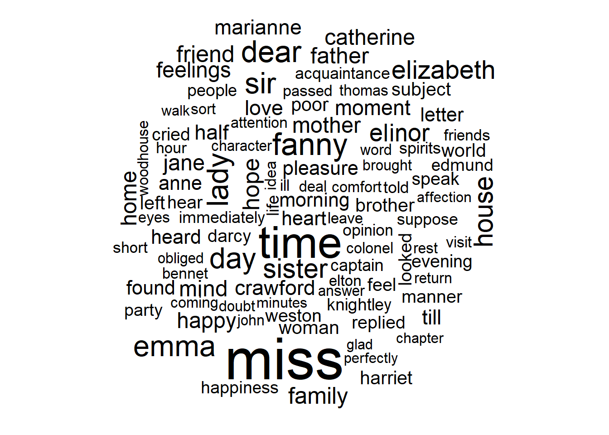
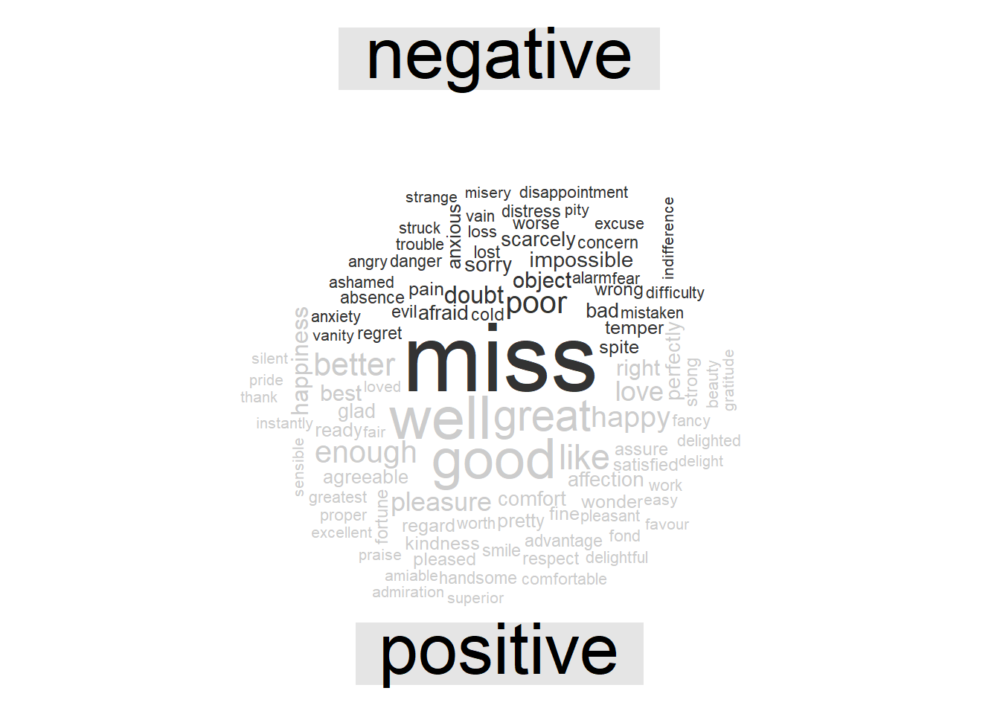
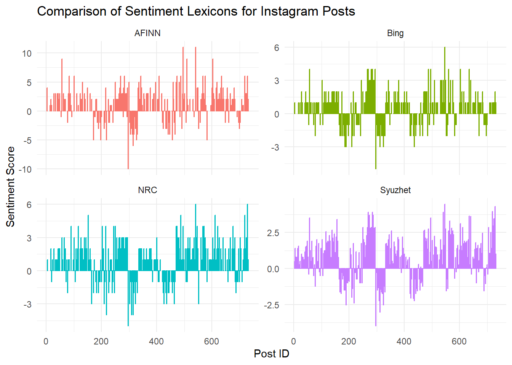
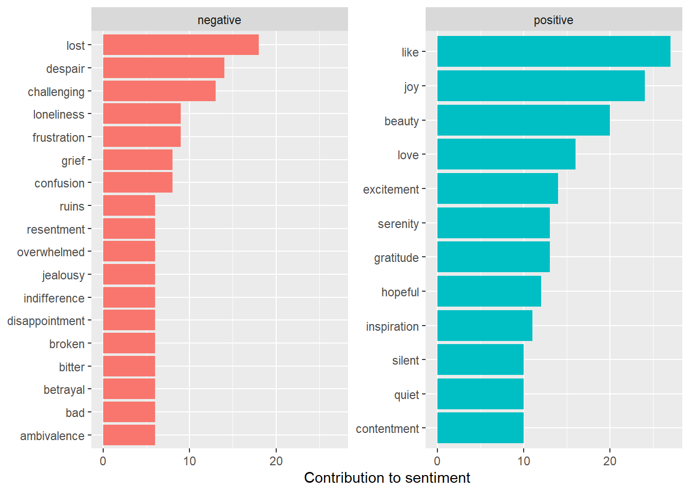

Assignment: Sentiment Analysis with Text Mining with R In Chapter 2 of Text Mining with R, the authors introduce sentiment analysis. Your task is to reproduce and extend that example.
Step 1 — Reproduce the Base Example Obtain the primary example code from Chapter 2.
Create a Quarto (.qmd) file that successfully runs this code.
Include a proper citation to the book and the original example code.
Step 2 — Extend the Analysis Extend the original example in two ways:
Use a different text corpus of your choosing (e.g., news articles, book reviews, speeches, social media, etc.).
Add at least one additional sentiment lexicon, which may come from:
Another R package, or
A lexicon you locate through external research.
You should clearly explain how the results differ from the original example.
Warning in inner_join(., get_sentiments("bing")): Detected an unexpected many-to-many relationship between `x` and `y`.
ℹ Row 435434 of `x` matches multiple rows in `y`.
ℹ Row 5051 of `y` matches multiple rows in `x`.
ℹ If a many-to-many relationship is expected, set `relationship =
"many-to-many"` to silence this warning.
# A tibble: 122,204 × 4
book linenumber chapter word
<fct> <int> <int> <chr>
1 Pride & Prejudice 1 0 pride
2 Pride & Prejudice 1 0 and
3 Pride & Prejudice 1 0 prejudice
4 Pride & Prejudice 3 0 by
5 Pride & Prejudice 3 0 jane
6 Pride & Prejudice 3 0 austen
7 Pride & Prejudice 7 1 chapter
8 Pride & Prejudice 7 1 1
9 Pride & Prejudice 10 1 it
10 Pride & Prejudice 10 1 is
# ℹ 122,194 more rows
Joining with `by = join_by(word)`
Joining with `by = join_by(word)`
Warning in inner_join(., get_sentiments("nrc") %>% filter(sentiment %in% : Detected an unexpected many-to-many relationship between `x` and `y`.
ℹ Row 215 of `x` matches multiple rows in `y`.
ℹ Row 5178 of `y` matches multiple rows in `x`.
ℹ If a many-to-many relationship is expected, set `relationship =
"many-to-many"` to silence this warning.
Warning in inner_join(., get_sentiments("bing")): Detected an unexpected many-to-many relationship between `x` and `y`.
ℹ Row 435434 of `x` matches multiple rows in `y`.
ℹ Row 5051 of `y` matches multiple rows in `x`.
ℹ If a many-to-many relationship is expected, set `relationship =
"many-to-many"` to silence this warning.
bing_word_counts
# A tibble: 2,585 × 3
word sentiment n
<chr> <chr> <int>
1 miss negative 1855
2 well positive 1523
3 good positive 1380
4 great positive 981
5 like positive 725
6 better positive 639
7 enough positive 613
8 happy positive 534
9 love positive 495
10 pleasure positive 462
# ℹ 2,575 more rows
bing_word_counts %>%group_by(sentiment) %>%slice_max(n, n =10) %>%ungroup() %>%mutate(word =reorder(word, n)) %>%ggplot(aes(n, word, fill = sentiment)) +geom_col(show.legend =FALSE) +facet_wrap(~sentiment, scales ="free_y") +labs(x ="Contribution to sentiment",y =NULL)
# A tibble: 1,150 × 2
word lexicon
<chr> <chr>
1 miss custom
2 a SMART
3 a's SMART
4 able SMART
5 about SMART
6 above SMART
7 according SMART
8 accordingly SMART
9 across SMART
10 actually SMART
# ℹ 1,140 more rows
library(wordcloud)
Loading required package: RColorBrewer
tidy_books %>%anti_join(stop_words) %>%count(word) %>%with(wordcloud(word, n, max.words =100))
Joining with `by = join_by(word)`

library(reshape2)
Attaching package: 'reshape2'
The following object is masked from 'package:tidyr':
smiths
Warning in inner_join(., get_sentiments("bing")): Detected an unexpected many-to-many relationship between `x` and `y`.
ℹ Row 435434 of `x` matches multiple rows in `y`.
ℹ Row 5051 of `y` matches multiple rows in `x`.
ℹ If a many-to-many relationship is expected, set `relationship =
"many-to-many"` to silence this warning.

Step 2: Extend the Analysis
2.1 Social Media Dataset
For the extended analysis, I will use the Social Media Sentiments Analysis Dataset from Kaggle,https://www.kaggle.com/datasets/kashishparmar02/social-media-sentiments-analysis-dataset. Unlike the original example, which analyzes Jane Austen’s novels, this dataset contains user-generated social media posts from different platforms, including Instagram, Facebook, and Twitter.
posts<-read.csv("https://raw.githubusercontent.com/lhamo07/Data-607-Assignment/refs/heads/main/sentimentdataset.csv")%>%rename_with(tolower) %>%mutate(post_id =row_number())tidy_words<-posts%>%# there is white space after each platform name so trim them before applying filtermutate(platform =str_trim(platform))%>%select(post_id,platform,text)%>%# format sentence into one word per row.unnest_tokens(word, text)
tidy_words %>%filter(platform =="Instagram") %>%inner_join(nrc_joy, by ="word") %>%count(word, sort =TRUE)
Warning in inner_join(., get_sentiments("bing")): Detected an unexpected many-to-many relationship between `x` and `y`.
ℹ Row 3314 of `x` matches multiple rows in `y`.
ℹ Row 2018 of `y` matches multiple rows in `x`.
ℹ If a many-to-many relationship is expected, set `relationship =
"many-to-many"` to silence this warning.
inner_join() keeps only words that exist in the Bing lexicon. A post with no Bing-listed words has no rows after the join, so it never reaches count() and never appears in the result.
Warning in inner_join(., get_sentiments("nrc") %>% filter(sentiment %in% : Detected an unexpected many-to-many relationship between `x` and `y`.
ℹ Row 46 of `x` matches multiple rows in `y`.
ℹ Row 1998 of `y` matches multiple rows in `x`.
ℹ If a many-to-many relationship is expected, set `relationship =
"many-to-many"` to silence this warning.
ggplot(all_sentiments,aes(x = post_id, y = sentiment, color = method)) +geom_col(show.legend =FALSE) +facet_wrap(~method, ncol =2, scales ="free_y") +labs(title ="Comparison of Sentiment Lexicons for Instagram Posts",x ="Post ID",y ="Sentiment Score" ) +theme_minimal()

The four sentiment methods generate very different absolute scores, but they follow almost the same relative pattern across the Instagram timeline, similar to what was observed in Pride and Prejudice novel. However, the Instagram sentiment chart shows much greater fluctuations, with frequent changes in sentiment compared to the more gradual peaks and dips in the novel.
In Pride and Prejudice, AFINN scores peaked as high as +80. In contrast, on Instagram, AFINN’s highest peak barely exceeds +10, while Bing and NRC peak around +6.
In the previous chart, the NRC lexicon remained almost entirely above the zero line, indicating a strong positive baseline shift. However, in the Instagram dataset, NRC scores drop significantly below zero, following the negative dips observed in the other lexicons, particularly around Post 300.
The Syuzhet lexicon uses a much narrower scoring range, approximately -2.5 to +2.5, because it assigns decimal weights to words rather than whole-number scores. Despite this smaller scale, it closely follows the same overall patterns and movements as AFINN and Bing.
Warning in inner_join(., get_sentiments("bing")): Detected an unexpected many-to-many relationship between `x` and `y`.
ℹ Row 3314 of `x` matches multiple rows in `y`.
ℹ Row 2018 of `y` matches multiple rows in `x`.
ℹ If a many-to-many relationship is expected, set `relationship =
"many-to-many"` to silence this warning.
bing_word_counts
# A tibble: 2,585 × 3
word sentiment n
<chr> <chr> <int>
1 miss negative 1855
2 well positive 1523
3 good positive 1380
4 great positive 981
5 like positive 725
6 better positive 639
7 enough positive 613
8 happy positive 534
9 love positive 495
10 pleasure positive 462
# ℹ 2,575 more rows
bing_word_counts_social_media %>%group_by(sentiment) %>%slice_max(n, n =10) %>%ungroup() %>%mutate(word =reorder(word, n)) %>%ggplot(aes(n, word, fill = sentiment)) +geom_col(show.legend =FALSE) +facet_wrap(~sentiment, scales ="free_y") +labs(x ="Contribution to sentiment",y =NULL)

In the austen_books the most common positive word is well and negative is miss whereas in social media dataset the most common positive word is like and negative is lost.
Conclusion
In conclusion, all four lexicons produce relatively similar sentiment patterns, despite differences in their scoring scales. In Pride and Prejudice, sentiment scores are mostly positive, which may reflect the nature of the novel’s storyline. In contrast, social media posts express a wider range of emotions, including both positive and negative sentiments. As a result, Instagram sentiment scores fluctuate more frequently, reflecting the varied emotions expressed in social media content.